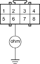

- Check resistance between the No. 6 terminal of the U3o connector and body ground. There should be 0 - 1.0 ohm.
U3o CONNECTOR

Wire side of female terminals
Is the resistance as specified?
YES - Faulty SRS unit or poor contact at the U3o connector; check the connection at the U3o connector and the SRS unit. If the connection is OK, replace the SRS unit. 
NO - Open in the SCS line between the No. 6 terminal of U3o connector and the No. 9 terminal (brown wire) of the Data Link connector (DLC) (16P) or open between the No. 4 terminal of the Data Link Connector (DLC) and body ground or open in the SCS line between the No. 6 terminal of the U3o connector and the No. 1 terminal (brown wire) of the service check connector (2P) or open between the No. 2 terminal of the service check connector (2P) and body ground; refer to the ''Electrical'' section, then continue troubleshooting.